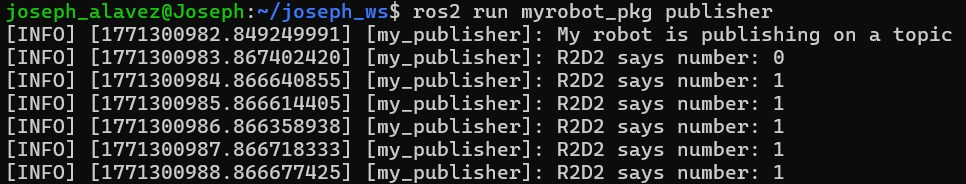
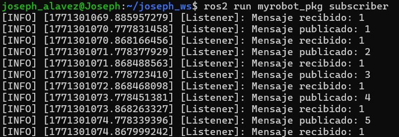
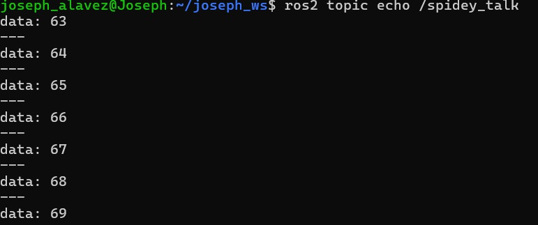
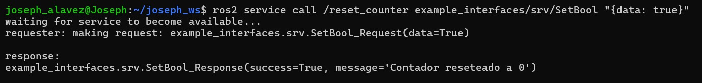
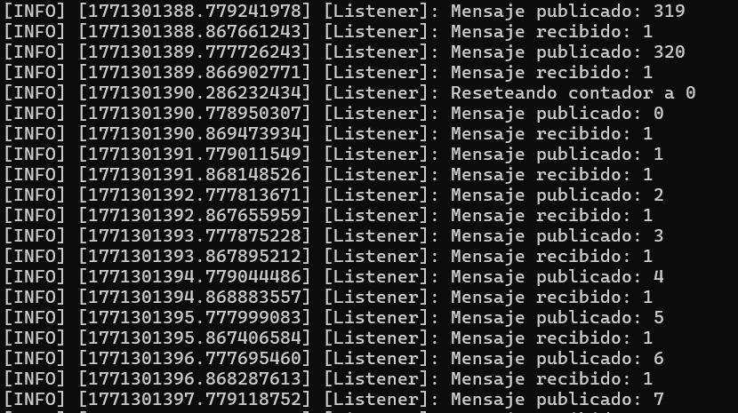
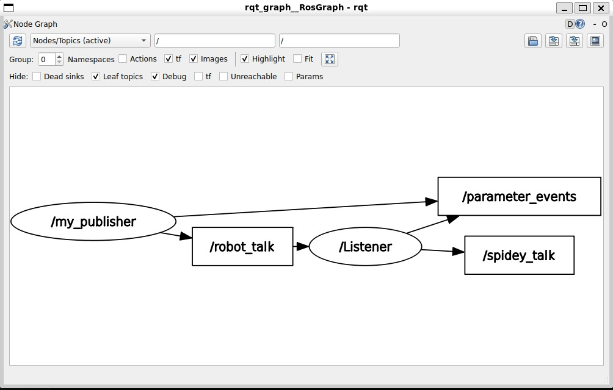

Ros 2 Services
Objective:
Add a functionality to reset the counter to zero: - Create a service server inside the “number_counter” node. - Service name: “/reset_counter” - Service type: example_interfaces/srv/SetBool. Use “ros2 interface show” to discover what’s inside! - When the server is called, you check the boolean data from the request. If true, you set the counter variable to 0.
We will then call the service directly from the command line.
Previous information
For this activity I will use the codes that I did on the ROS2 activity or the task_2, because we only need to add a few things and change a bit the logic of the codes.
1st code (my_publisher)
On this code we will change 2 things and add 1:
- Import the data type
- The type on data we are sending
- The logic of the counter
Import the data type
Int64 is used when we want to transmit 64-bit integer numeric data; for example, if we need to send or receive large numeric values (for example, a counter, measurement of some parameter, etc.).
In this exercise we are being asked to use integer data type, for that we will import it from the example_interfaces.msg
Type of data
Now that we have the integer data type we will change that small text on the initialization function to send integer dataso our function can work.
Logic of the counter
The previous code was adding, but now we want it to send the same data because when using boolean data there are only 1 and 0, so we will change the signs from += to just = to always have the same data
my_publisher code
Here is the complete code:
#!/usr/bin/env python3
import rclpy
from rclpy.node import Node
from example_interfaces.msg import Int64
class myPublisher(Node):
def __init__(self):
super().__init__("my_publisher")
self.get_logger().info("My robot is publishing on a topic")
self.counter = 0
self.publisher_ = self.create_publisher(Int64, "robot_talk", 10) # Use Int64 instead of string
self.create_timer(1.0, self.talk)
def talk(self):
msg = Int64()
msg.data = self.counter # Publica el contador
self.get_logger().info(f'R2D2 says number: {msg.data}')
self.publisher_.publish(msg)
self.counter = 1 # El contador ahora solo es igual porque la lógica de sumar esta en my_susbscriber
def reset_counter(self):
self.counter = 0 # Resetear el contador si el servicio es invocado
def main(args=None):
rclpy.init(args=args)
publisher_node = myPublisher()
rclpy.spin(publisher_node)
rclpy.shutdown()
if __name__ == "__main__":
main()
2nd code (my_subscriber)
For this code we will add more things and the change to logic of all the data we were recieving.
Data type
For this exercise we are being asked to use boolean data to use that data we use Setbool.
Setbool is used when defining a service that needs to receive a boolean value (True or False) and respond with a confirmation or message. For example, a service is a way to perform actions that require an immediate response, such as turning a device on/off, resetting a counter, or enabling an option.
Now at the beginning of the code we will add the Int64 and Setbool so we can use that data type.
After this we have to change all the data that was on the previous code to Int64 data type.We change the initialization function of subscriber and publisher:
self.subscriber = self.create_subscription(Int64, "robot_talk", self.callback_receive_info, 10)
self.publisher_ = self.create_publisher(Int64, "spidey_talk", 10)
Create the server
We will add 2 lines:
-
self.server_ creates the server and works like the other terms to select the data type, name and function.
-
self.counter to start the counter that will help us to do the reset function.
self.server_ = self.create_service(SetBool, "/reset_counter", self.read_bool_callback)
self.counter = 0 # Begins the counter on 0
Logic of adding on the recieved message
For this part we will change a small detail on the function def callback_receive_info, so that it adds to what our publisher is sending.
It's put += because it's linked to the publisher, since now the publisher is worth 1, so I want to keep adding it.
Create a function to read the boolean data
For this we will follow the path to create a function, also this will be the function that reset our counter to 0.
def read_bool_callback(self, request, response):
if request.data:
#Resetea el contador como el mensaje a decir
self.counter = 0
self.mensaje_a_decir = self.counter #Resetea el valor de mensaje_a_decir
response.success = True
response.message = "Contador reseteado a 0"
self.get_logger().info("Reseteando contador a 0")
else:
response.success = False
response.message = "No se pudo resetear el contador, intenta nuevamente"
return response
This function resets the counter to 0 and the value of message_to_say when it receives a request with True. If the request is False, it takes no action and returns an error message.
my_subscriber code
Here is the complete code:
#!/usr/bin/env python3
import rclpy
from rclpy.node import Node
from example_interfaces.msg import Int64
from example_interfaces.srv import SetBool
class mySubscriber(Node):
def __init__(self):
super().__init__("Listener")
self.subscriber = self.create_subscription(Int64, "robot_talk", self.callback_receive_info, 10)
self.publisher_ = self.create_publisher(Int64, "spidey_talk", 10)
self.create_timer(1.0, self.talk)
self.mensaje_a_decir = 0
self.server_ = self.create_service(SetBool, "/reset_counter", self.read_bool_callback)
self.counter = 0 #Begins the counter on 0
def callback_receive_info(self, msg_que_escucho: Int64):
#Recibe el mensaje como tipo Int64
self.get_logger().info(f"Mensaje recibido: {msg_que_escucho.data}")
self.mensaje_a_decir += msg_que_escucho.data #Guarda el valor del mensaje recibido
#Se pone += porque esta vinculado con el publisher pues haora el publisher vale 1 entonces yo quiero
#irlo sumando
def talk(self):
#Publica el valor actualizado del contador
msg_publicador = Int64()
msg_publicador.data = self.mensaje_a_decir #Publica el valor entero
self.publisher_.publish(msg_publicador)
self.get_logger().info(f"Mensaje publicado: {msg_publicador.data}")
#Eso afecta a lo que voy a publicar porque solo uno hace la cuenta y este publicado nunca la hace
def read_bool_callback(self, request, response):
if request.data:
#Resetea el contador como el mensaje a decir
self.counter = 0
self.mensaje_a_decir = self.counter #Resetea el valor de mensaje_a_decir
response.success = True
response.message = "Contador reseteado a 0"
self.get_logger().info("Reseteando contador a 0")
else:
response.success = False
response.message = "No se pudo resetear el contador, intenta nuevamente"
return response
def main(args=None):
rclpy.init(args=args)
subscriber_node = mySubscriber()
rclpy.spin(subscriber_node)
rclpy.shutdown()
if __name__ == "__main__":
main()
Results
To see the results we need to open 4 ubuntu terminals
1st terminal
Is important to remember that when we open a new terminal we need to move to our folder and install the setup.bash
After this we will type:

2nd terminal
Repeat the same process but now we will open our full second code

We can see the received message, which is only 1, since that's what the previous code sends. And the published message, which adds one to the received message to create the counter.
3rd terminal
Repeat the same process but now we will open our talk of the second code

4th terminal
Finally, to perform the reset from what was published, we need to open another terminal and type

Now we can see that in our 2nd terminal the count is reset to 0

And it also restarts on our 3rd terminal

Graph the result
To see the diagram grapg we need to put in a new terminal the following:
After this we will have to turn off the Dead sinks, tf, Unreachable and Params by clicking on the box. In that way we can see the almost the same image (dependening on the name of your variables) as the one that we have on the activity. Reaching the objective of the activity.
